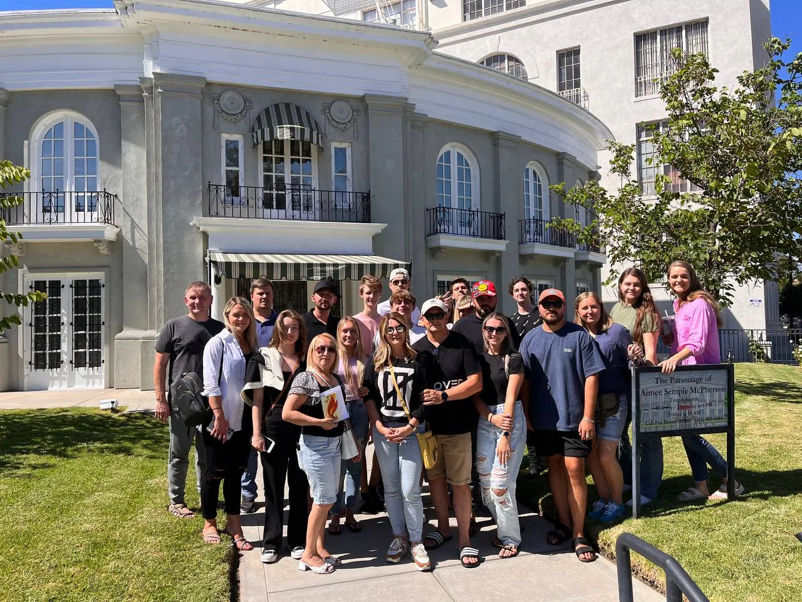

Возраст 0-12
KidsZone
Для детей до 12 лет — здесь они знакомятся с Иисусом, растут в вере и находят новых друзей.
Подробнее →Приходите по воскресеньям в 14:30 в North Hollywood — поклонение, молитва и живое общение.
CLA City существует, чтобы указывать людям на Иисуса Христа — через Писание, молитву и жизнь вместе. Мы служим русскоязычным семьям из России, Украины и других стран и рады каждому, кто ищет Христа.
О CLA →Поклонение, молитва и библейское наставление — на русском языке, около 90 минут. Приходите на несколько минут раньше и одевайтесь так, как вам удобно.
14:30 (2:30 PM) · Главный зал · ~90 минут
5853 Laurel Canyon Boulevard, North Hollywood, CA 91607
Церковь собирается для поклонения, библейского учения, молитвы и общения.
Мы собираемся, чтобы вместе поклоняться Иисусу Христу.
Писание — высший авторитет для того, чему учит церковь.
Молитва занимает центральное место в том, как церковь ищет Бога и служит людям.
Первый шаг простой: прийти на воскресное служение. После этого мы поможем вам найти общину, служение и ученичество — и с радостью ответим на вопросы перед визитом.
Связаться с нами →
MTC — это путь ученичества CLA, основанный на Писании, молитве и практическом опыте служения, который поможет вам расти и подготовиться к служению.
Explore MTC →
Текущее пасторское руководство Church LA служит с 2021 года.
Добро пожаловать в CLA City. Мы очень рады, что вы здесь.
Возможно, вы только начинаете искать Бога или ищете церковь, которую сможете назвать своим домом. В любом случае, мы будем рады познакомиться с вами, вместе поклоняться Богу и помочь вам почувствовать себя как дома.
Будем рады видеть вас! — Пасторы Леонид и Марина Малко
Эти служения помогают людям расти в вере, молитве, общине и служении.
Для детей до 12 лет — здесь они знакомятся с Иисусом, растут в вере и находят новых друзей.
Подробнее →Для подростков и молодых людей от 13 до 25 лет, которые хотят расти в вере и находить настоящих друзей.
Подробнее →Для женщин, которые ищут поддержку, общение и совместную молитву.
Подробнее →Для тех, кому нужна молитва или кто хочет поддерживать в молитве других.
Подробнее →Для тех, кому важно общение в небольшом кругу не только по воскресеньям.
Подробнее →Для музыкантов и вокалистов, которые хотят служить Богу и церкви через музыку.
Подробнее →Перейдите на YouTube-канал CLA City для медиа Church LA.
Открыть YouTube-канал →